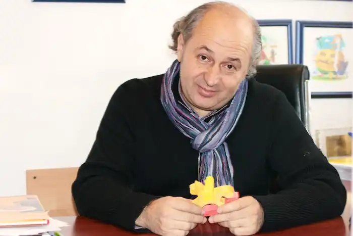

Іван Малкович — український поет і видавець.
Народився 10 травня 1961 року в Березові Нижньому на Івано-Франківщині. Закінчив скрипковий клас Івано-Франківського музучилища та філологічний факультет Київського державного університету ім. Т.Шевченка. Член Спілки письменників з 1986 р.
Автор семи "дорослих" поетичних книг: "Білий камінь" (1984), "Ключ" (1988), "Вірші" (1992), "Із янголом на плечі" (1997), "Вірші на зиму" (2006), "Все поруч" (2010, 2011 (2-ге, доповнене видання); "Подорожник", 2013. Ще 19-річним юнаком на всеукраїнському літературному семінарі в Ірпені таємним голосуванням кількох сотень літераторів І.Малковича було обрано "Найкращим молодим поетом". "Увесь літературний Ірпінь кілька днів величав мене "королевичем молодої поезії", тож моєму юнацькому щастю не було меж... Ми захлиналися своїми й чужими віршами, а я до півночі, до крові на пальцях, грав на гітарі і співав призабутих гуцульських і лемківських пісень..." Публікацію його першої книги відстоювала легендарна українська поетеса Ліна Костенко. "Вихід кожної його поетичної книги ставав подією літпроцесу... Неомодерні поезії І.Малковича стали зразками витриманого смаку поетики "нової хвилі". (Енциклопедія актуальної літератури). Іван Малкович — редактор, упорядник, автор та перекладач кількох десятків книжок для дітей. "Це людина, маніакально віддана ідеї "особливо якісної української книги". (Книжковий огляд, № 1, 2002). Вірші Івана Малковича перекладено англійською, німецькою, італійською, російською, польською, бенгальською (Індія), литовською, норвезькою, грузинською, словацькою, словенською мовами. У видавництві "А-БА-БА-ГА-ЛА-МА-ГА" побачили світ чотири поетичні книжки Івана Малковича "Із янголом на плечі", 1997 (у межах видавничого проекту "Поетична аґенція "Княжів"), "Вірші на зиму", 2006; "Все поруч", 2010; 2011 (2-ге, доповнене видання); "Подорожник", 2013;.